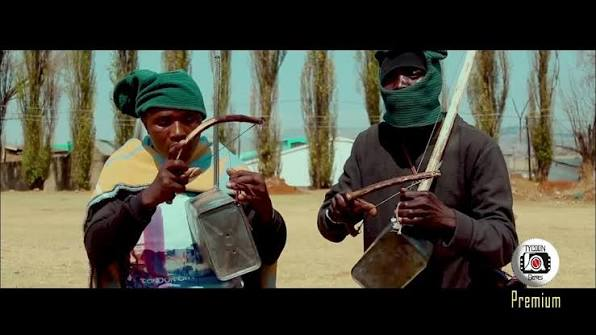
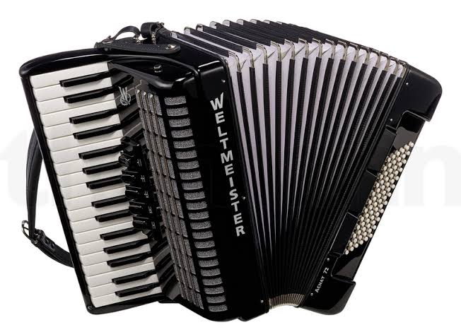

Traditional Basotho music is expressed through lifela(praise poetry), lithoko(heroic praises) and instruments such as:


Dances include: Mokhibo it is performed by women, sometimes with clapping and stamping. Ntlamo -it is a high kicking precise footwork performed by young men. Mohobelo -Same as ntlamo but different in songs and men here use sticks for dancing.
Liphotha-Traditional dance performed during harvest festivals and it perfomed by boys wearing their litopo(gumboots). Famo-Basotho type of music.It originated in the mines in the early 1920's.